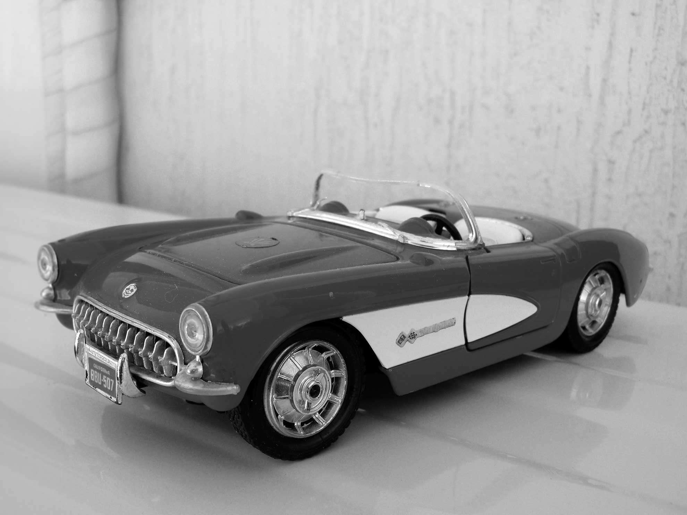
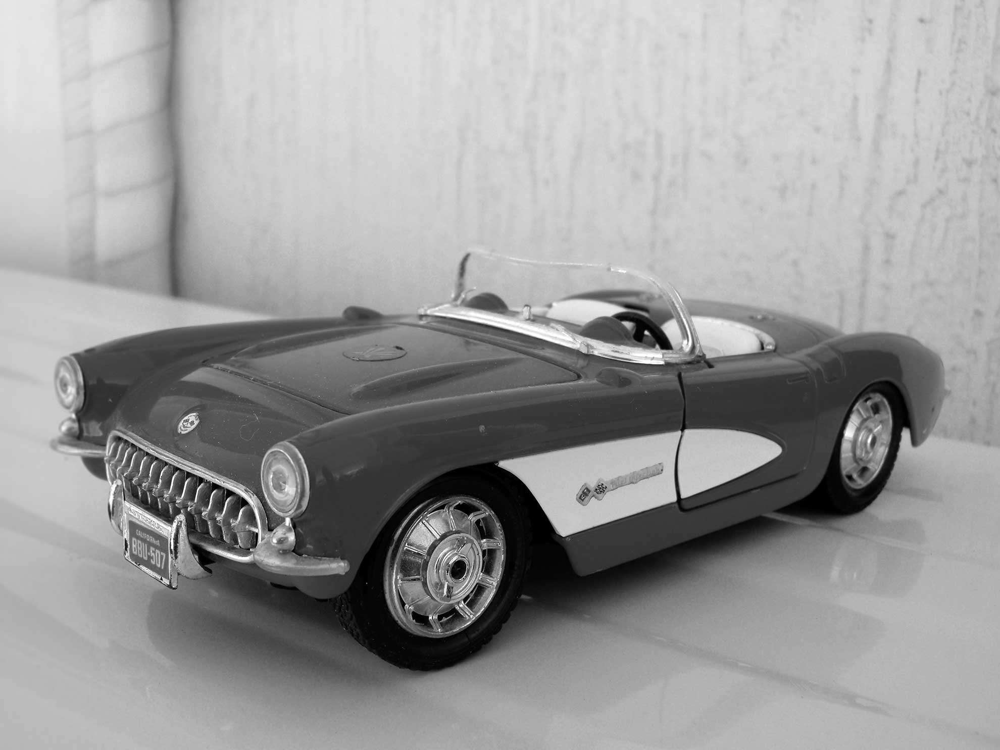
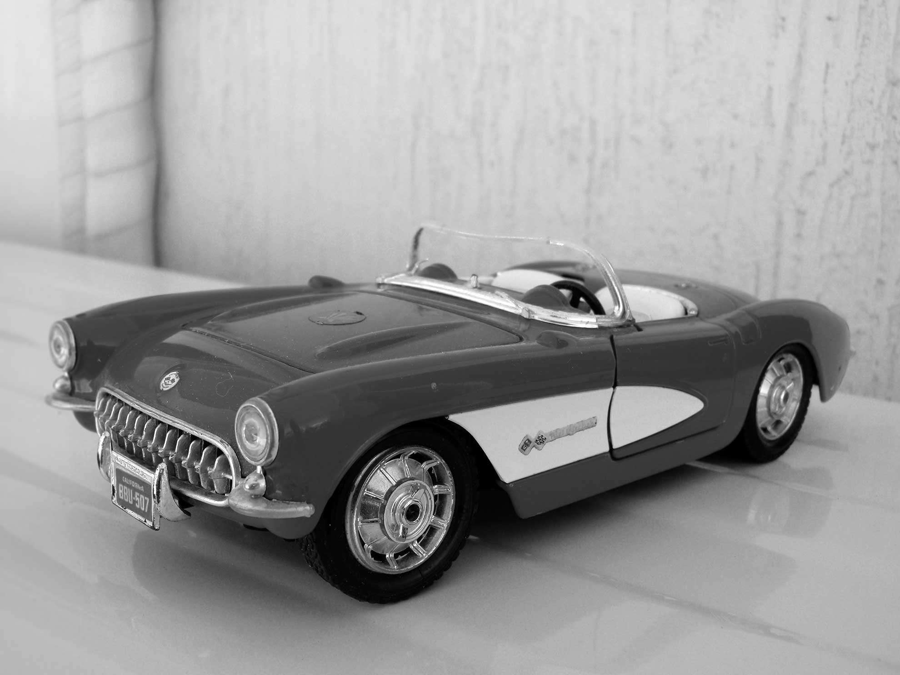

loading..

Born on March 26, 1965, in Athens, Greece, Nick Levantis grew up in a fertile cultural and musical period at the early eighties.
He started his first post punk band called "Prisoners" at the age of fifteen together with his best friend Leo doing their first rehearsals and concerts in the grey industrial zone of Piraeus port.
Their second band "Tarot" was more experimental with influences from different genres : punk, new wave and electronic music.
They played many times live, got good reviews from music critics but their aim was purely to express their inner world presenting unique music ideas.
At mid eightiesNick's computer programming studies helped him to step deeper into the world of electronic music, and he started composing & experimenting with his trusty Atari and a bunch of synths.
At late eighties was the singer and guitar player in a fairly successful alternative underground band at that time in Greece, Sonar Blips (Wipe Out Records).
Today Nick is creating pieces of music trying to surpass the limits of specific genres with the believing that there is no evolution in art without the constant presence of internal or social revolution. Creating music is a continuous process to capture emotions and pictures of life through sounds, rhythm and melody.
The last two years has created a total of forty genre agnostic songs with many avant-garde and minimalism elements that are meant to travel the listener to the magical world of electronic music. You can find full list of Nick songs on Soundcloud.

The retro multiple tones of grey and the bold shadows are some of the reasons why some people falling in love with black and white photos.
Possibly our brain decodes better the details of a black and white photography and supplements differently what is missing.
But wait .. The colourless, temporal and mysterious magic emitted from black and white can?t be explained so simply..
Let your imagination take you back to my small photographic journey through the toys of my mature age.